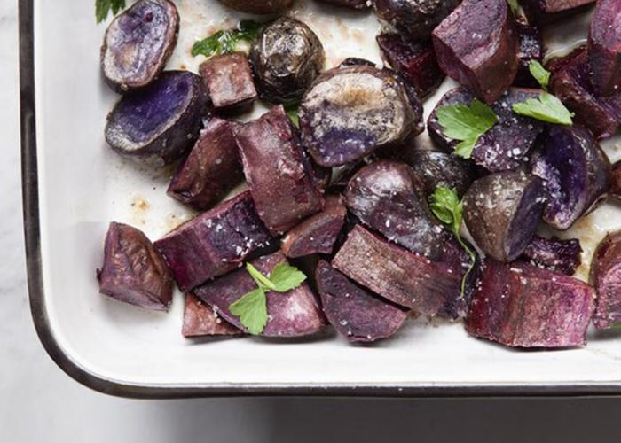

Roasted Purple Potatoes with Apple Cider Vinegar

The Recipe
Thanks to our friends at Urban Remedy (link is external)for sharing this
collaboration with Bay Area-based Good Eggs(link is external). These irresistibly
crispy potatoes are delicious eaten alone, as a side, or added to your favorite
salad. It’s a gluten-free, vegan dish of comfort food that’s full of healing
ingredients. Purple potatoes are packed with the antioxidant anthocyanin, a
flavonoid that’s known to boost immunity, battle inflammation, and combat chronic
disease. Apple cider vinegar helps lower blood sugar, improves insulin responses,
and keep you feeling full longer.
Ingredients
- 3 pounds purple potatoes, roughly chopped into large chunks
- 1 tablespoon coconut oil
- 3 tablespoons apple cider vinegar
- 2 tablespoons olive oil
- 1 tablespoon flaky salt
- Handful parsley, roughly chopped
Instructions
- Preheat oven to 325°F.
- Pour coconut oil into a baking pan. Add the potatoes and lightly toss.
- Bake until potatoes are tender and crisp, about 35 to 40 minutes. Remove pan from the oven and drizzle with olive oil and apple cider vinegar.
- Put in serving dish and sprinkle with flaky salt and parsley. Serve immediately!